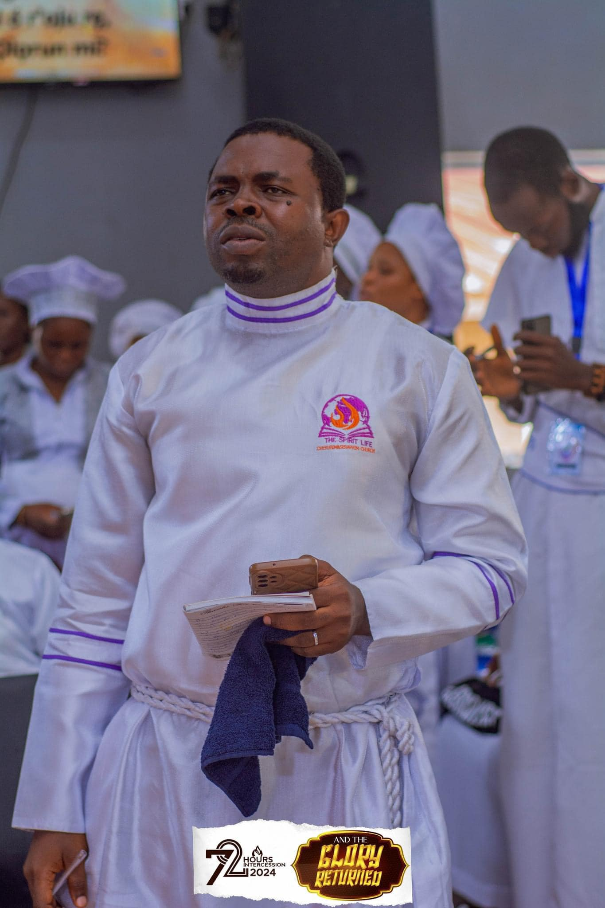

Minister Details
-
Church Spirit Life C&S Church, Ibadan
-
Profession Accountant & Ex-Banker
-
Church Founded December 6, 2015
-
Location Ibadan, Oyo State
-
Origin Ikeji-Ile Ijesha, Osun State
Featured Minister
Cherub Obadare
Biography
Cherub Obadare is an accountant by profession and a former banker, hailing from Ikeji-Ile Ijesha in Osun State. He currently serves as the President and Shepherd of Spirit Life C&S Church and Spirit Life Discipleship Ministry in Ibadan. Born into the C&S fold — specifically the C&S Movement Church Sub-headquarters in Kano — faith runs deep in his family: his father is a prophet in the C&S church.
His encounter with salvation came on 19th February 1999. While returning home from school, a stranger approached him and began to preach; that very day, Cherub Obadare made the decision to accept Christ. He never saw that brother again, but the impact of that encounter shaped the entire course of his life.
Long before founding a church, Cherub Obadare served faithfully as a field and itinerary preacher — even throughout his years in the banking industry. He began preaching across churches from 2004, and on 6th December 2015, the church ministry was formally established. Since then, the Lord has granted him the privilege of pioneering a prophetic movement focused on bringing sanity to the prophetic ministry, raising new breeds of prophets who are rooted in Christ, and removing spiritual blindfolds through intensive preaching and teaching of the word of grace and truth.
"The C&S youths should be practitioners of the word of God — living the word of God by proofs."
— Cherub Obadare
Cherub Obadare carries a deep conviction about the C&S church's original vision and calling. He believes the church was founded on Christ Jesus — not for fame or money — and that revival is already underway through sons and daughters who will not compromise their faith. His message to C&S youths is clear: shun power tussles, titles without mantles, and the rat race for fame, and instead dedicate themselves fully to the assignment of soul-winning and the living of God's word by proof.
Back to All Ministers"Not unto us, O Lord, not unto us, but unto thy name give glory."
Psalm 115:1